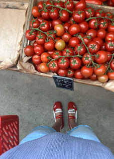
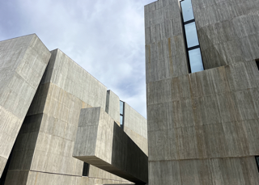
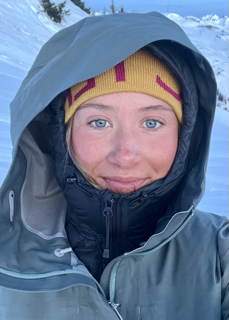
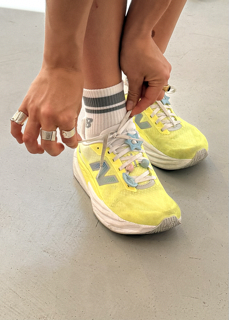
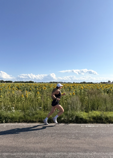
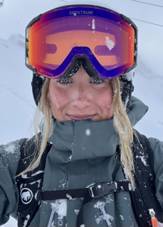

Alongside my studies
I would describe myself as a social, happy and positive person who loves trying new things. This can mean anything from trying a new sport or taking on a challenge to exploring new places or testing a new recipe. Whatever I do, I always want to learn, develop and become better at what I do.
I have been active since childhood and have tried many different sports, but figure skating and cheerleading have always been closest to my heart. Both combine show, eye-catching competition outfits, and routines with many different elements. You train hard for a long time just to be in the spotlight for 2–3 minutes. Cheerleading, in particular, taught me the importance of teamwork, trust and understanding that everyone matters, no matter their role.
Skiing has been part of my life since I was 18 months old and I absolutely love it. What started as a hobby has also become a job, as I had the opportunity to work with skiing the winter of 2025. To me, there is something special about working with something you truly enjoy and care about! I also work as a Brand Ambassador for New Balance, where I represent the brand in stores, at community events and through running activities. So yes, I run too! At my part-time job at Thule, I enjoy creating great customer experiences and working with quality and the people the brand is made for.
Besides sports and staying active, I love capturing moments, whether with my phone or a proper camera. In 2025 and 2026, I was part of the TCS Lidingöloppet social media team, capturing, editing and publishing content in real time. My friends could tell you how often I take photos and videos! Last but not least, I am also interested in fashion and interior design, nothing beats the feeling of putting together a really nice outfit!














